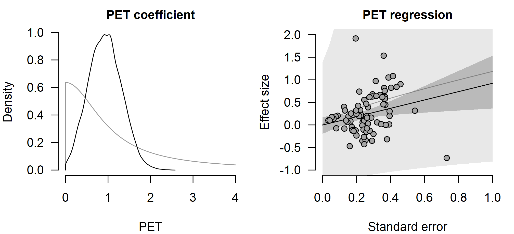
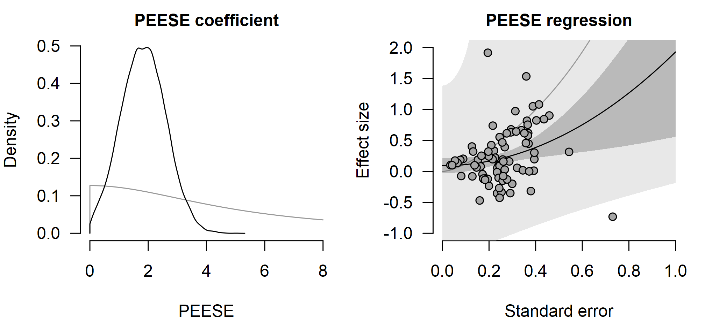
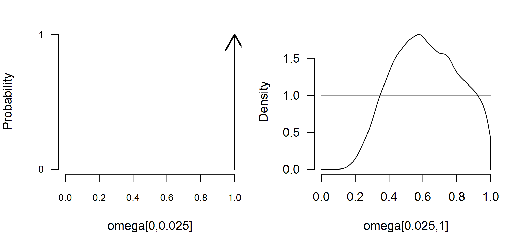
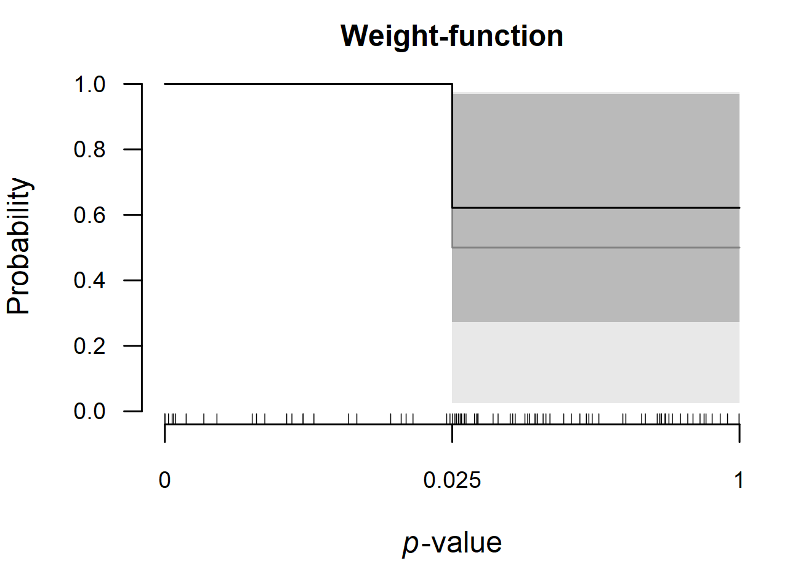
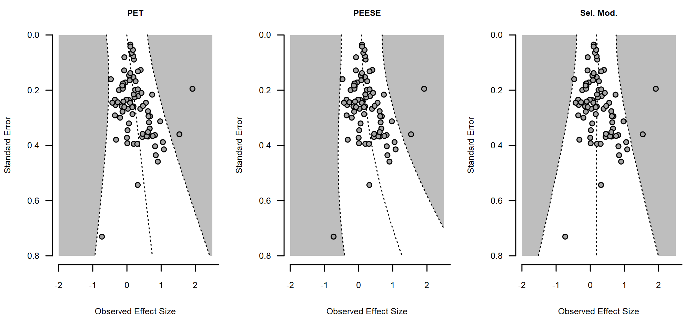
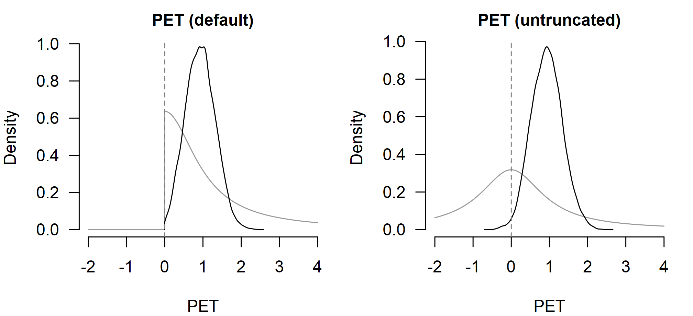
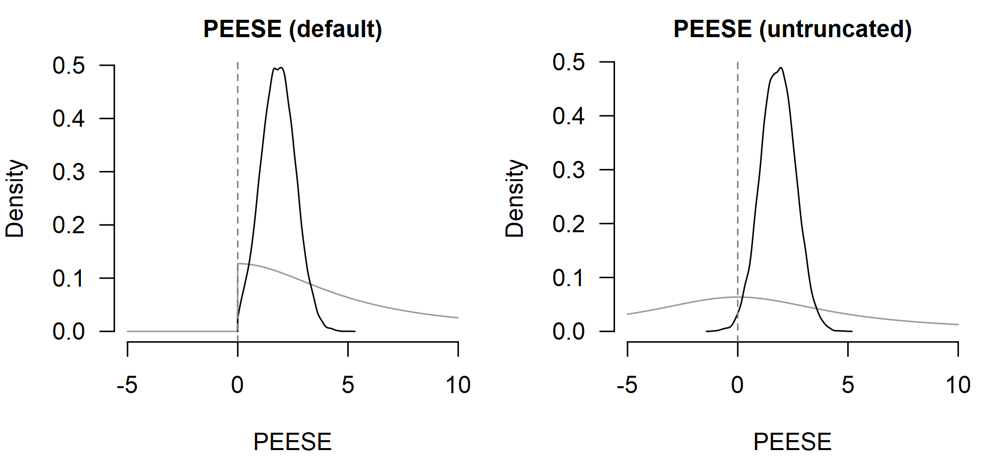
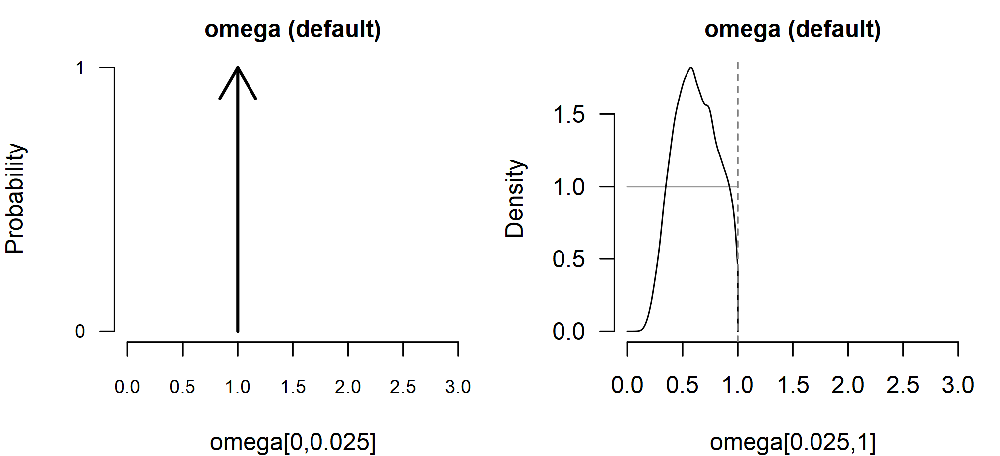
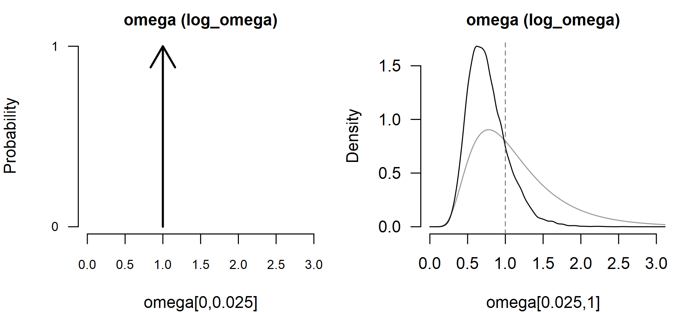

Publication-Bias Adjustment
František Bartoš
28th of April 2026
Source:vignettes/v11-metafor-parity-publication-bias.Rmd
v11-metafor-parity-publication-bias.RmdThis vignette illustrates how to use the RoBMA R package
(Bartoš & Maier,
2020) for single-model publication-bias adjustment. We walk
through the ego-depletion dataset from the metadat package,
fitting three single-model bias adjustments alongside their
metafor package counterparts (Viechtbauer, 2010): PET and PEESE (Stanley &
Doucouliagos, 2014), and a weight-function selection model
(Vevea &
Hedges, 1995). All of the models can also be combined with
Bayesian model-averaging into a Robust Bayesian meta-analysis as
described in the Robust Bayesian
Meta-Analysis vignette.
The vignette is organized in three parts. First, we describe the
default prior distributions on the bias parameters. Second, we fit each
model with its default prior distribution, check parity against the
metafor package, and contrast the implied funnels. Third,
we relax each default in turn, placing the restricted and relaxed
posteriors side by side.
For the non-bias-adjusted workflow showing more features (also applicable to the bias-adjustment models) see the Bayesian Meta-Analysis vignette. The Prior Distributions vignette covers setting prior distributions for the meta-analytic parameters.
Default Bias-Adjustment Prior Distributions
The three model types use a separate prior distribution on the
bias-adjustment parameter, independent of the prior distributions on
mu, tau, and the meta-regression
coefficients.
| Model | Bias parameter | Default prior distribution |
|---|---|---|
bPET() |
PET |
Cauchy(, ), truncated to |
bPEESE() |
PEESE |
Cauchy(, ), truncated to |
bselmodel() |
omega |
one-sided weight function with
steps = c(0.025) and alpha = c(1, 1)
|
The PET prior distribution is invariant to the effect-size measure.
The PEESE scale is rescaled by
so the prior distribution describes a comparable bias on each scale; the
ratio is
for measure = "SMD". The weight-function default specifies
a Dirichlet prior distribution on the relative publication probabilities
of one-sided p-values below and above
,
equivalent to a three-parameter selection model (3PSM). Unlike the prior
distributions for meta-analytic parameters, the bias-adjustment prior
distributions are not affected by rescale_priors; they can
be replaced via prior_bias, and the weight-function
steps can be changed directly via the steps
argument. The bias-adjustment models rely on the
effect_direction argument. Selection models penalize
one-sided p-values evaluated against the expected sign of the effect,
and the truncated PET and PEESE prior distributions constrain the
small-study coefficient to pull the estimate toward zero from the
dominant direction. The effect_direction argument tells the
model which side that is. The default
effect_direction = "detect" infers the direction from the
median of yi (positive median yields
"positive", negative median yields
"negative"). Set effect_direction = "positive"
or effect_direction = "negative" explicitly when the
dominant direction is known a priori.
These prior distributions correspond to the default settings tested
in the larger RoBMA-PSMA ensemble in Bartoš et
al. (2023). Note that all three
defaults are restricted to assume the presence of publication
bias: the truncated PET / PEESE coefficients are constrained to
pull the estimate toward zero, and the cumulative-Dirichlet weight
function forces every non-significant interval’s omega to
be no greater than the most-significant interval’s reference value of
.
The “no publication bias” case is therefore on the parameter-space
boundary.
In a model-averaged RoBMA() ensemble this is exactly the
desired behaviour: a separate no-bias model carries the “no selection”
hypothesis, and the bias-adjustment models are deliberately one-sided so
the contrast against the no-bias spike is sharp and the inclusion Bayes
factor is diagnostic. For the single-model fits in this vignette there
is no companion no-bias model in the ensemble, so the same restriction
can shrink estimates toward the implied bias even when the data are
consistent with no selection. The Flexible Bias Prior
Distributions section below relaxes the restriction model by model
via the prior_bias argument when the single-model fit is
the analysis of interest.
Default Fits
The dat.lehmann2018 dataset from the
metadat package collects 81 standardized mean differences
from the ego-depletion meta-analysis. Effect sizes yi and
sampling variances vi are already provided.
data("dat.lehmann2018", package = "metadat")
dat <- dat.lehmann2018We fit each of the three bias-adjustment models with its default
prior distribution and contrast against the matching
metafor package call. The funnel-plot view at the end of
the section then visualizes how each adjustment encodes a different bias
mechanism.
PET
The PET model regresses effect sizes on the standard error. With
metafor::rma() it is fit by passing
mods = ~ sqrt(vi); the slope on sqrt(vi) is
the PET coefficient. The RoBMA R package implements PET as
a meta-regression (with a random-effects heterogeneity component) rather
than the UWLS variant, for consistency with the rest of the
framework.
fit_PET_metafor <- metafor::rma(yi, vi, mods = ~ sqrt(vi), data = dat)
fit_PET_metafor
#>
#> Mixed-Effects Model (k = 81; tau^2 estimator: REML)
#>
#> tau^2 (estimated amount of residual heterogeneity): 0.0940 (SE = 0.0236)
#> tau (square root of estimated tau^2 value): 0.3065
#> I^2 (residual heterogeneity / unaccounted variability): 79.74%
#> H^2 (unaccounted variability / sampling variability): 4.94
#> R^2 (amount of heterogeneity accounted for): 8.96%
#>
#> Test for Residual Heterogeneity:
#> QE(df = 79) = 234.7716, p-val < .0001
#>
#> Test of Moderators (coefficient 2):
#> QM(df = 1) = 6.5617, p-val = 0.0104
#>
#> Model Results:
#>
#> estimate se zval pval ci.lb ci.ub
#> intrcpt -0.0359 0.1038 -0.3455 0.7297 -0.2394 0.1676
#> sqrt(vi) 1.0765 0.4203 2.5616 0.0104 0.2528 1.9002 *
#>
#> ---
#> Signif. codes: 0 '***' 0.001 '**' 0.01 '*' 0.05 '.' 0.1 ' ' 1bPET() fits the same model with the default Cauchy prior
distribution on the (positive) PET coefficient.
measure = "SMD" selects the default prior distributions for
standardized mean differences.
fit_PET_brma <- bPET(
yi = yi, vi = vi, measure = "SMD",
data = dat, seed = 1
)
summary(fit_PET_brma, include_mcmc_diagnostics = FALSE)
#>
#> Bayesian Random-Effects PET Model (k = 81)
#>
#> Estimates
#> Mean SD 0.025 0.5 0.975
#> mu -0.004 0.097 -0.196 -0.002 0.181
#> tau 0.307 0.040 0.233 0.305 0.391
#>
#> Publication Bias
#> Mean SD 0.025 0.5 0.975
#> PET 0.932 0.386 0.214 0.924 1.699The posterior mean of mu is the bias-corrected average
effect; the PET coefficient quantifies how strongly small
studies pull the meta-analytic mean. The left panel shows the prior and
posterior of the PET coefficient with
prior = TRUE overlaying the prior distribution; the right
panel shows the implied PET regression of effect on standard error from
plot_pet_peese(), with the prior band overlaid.
par(mfrow = c(1, 2), mar = c(4, 4, 2, 1), cex.axis = 0.8, cex.lab = 0.8, cex.main = 0.75)
plot(fit_PET_brma, parameter = "PET", prior = TRUE, main = "PET coefficient", xlim = c(0, 4))
plot_pet_peese(fit_PET_brma, prior = TRUE, main = "PET regression")
The half-Cauchy prior distribution on PET is wide; the
posterior concentrates near
,
broadly consistent with the metafor package estimate but
pulled toward zero by the prior distribution. The implied regression
line intersects the distribution of effect sizes and standard
errors.
PEESE
The PEESE model regresses effect sizes on the sampling variance
instead of the standard error. With metafor::rma() it is
fit by passing mods = ~ vi; the slope on vi is
the PEESE coefficient. As with PET, the RoBMA R package
PEESE is the meta-regression version (retaining the heterogeneity
component), not the UWLS variant.
fit_PEESE_metafor <- metafor::rma(yi, vi, mods = ~ vi, data = dat)
fit_PEESE_metafor
#>
#> Mixed-Effects Model (k = 81; tau^2 estimator: REML)
#>
#> tau^2 (estimated amount of residual heterogeneity): 0.0917 (SE = 0.0232)
#> tau (square root of estimated tau^2 value): 0.3028
#> I^2 (residual heterogeneity / unaccounted variability): 79.77%
#> H^2 (unaccounted variability / sampling variability): 4.94
#> R^2 (amount of heterogeneity accounted for): 11.18%
#>
#> Test for Residual Heterogeneity:
#> QE(df = 79) = 231.8504, p-val < .0001
#>
#> Test of Moderators (coefficient 2):
#> QM(df = 1) = 5.6925, p-val = 0.0170
#>
#> Model Results:
#>
#> estimate se zval pval ci.lb ci.ub
#> intrcpt 0.0903 0.0647 1.3959 0.1627 -0.0365 0.2171
#> vi 1.8824 0.7890 2.3859 0.0170 0.3360 3.4287 *
#>
#> ---
#> Signif. codes: 0 '***' 0.001 '**' 0.01 '*' 0.05 '.' 0.1 ' ' 1bPEESE() fits the same model with the default Cauchy
prior distribution on the (positive) PEESE coefficient, with the prior
scale rescaled to the effect-size measure.
fit_PEESE_brma <- bPEESE(
yi = yi, vi = vi, measure = "SMD",
data = dat, seed = 1
)
summary(fit_PEESE_brma, include_mcmc_diagnostics = FALSE)
#>
#> Bayesian Random-Effects PEESE Model (k = 81)
#>
#> Estimates
#> Mean SD 0.025 0.5 0.975
#> mu 0.092 0.063 -0.031 0.092 0.216
#> tau 0.304 0.041 0.230 0.302 0.389
#>
#> Publication Bias
#> Mean SD 0.025 0.5 0.975
#> PEESE 1.840 0.759 0.376 1.837 3.350As for PET, the left panel shows the prior and posterior of the
PEESE coefficient and the right panel shows the implied
PEESE regression of effect on sampling variance.
par(mfrow = c(1, 2), mar = c(4, 4, 2, 1), cex.axis = 0.8, cex.lab = 0.8, cex.main = 0.75)
plot(fit_PEESE_brma, parameter = "PEESE", prior = TRUE, main = "PEESE coefficient", xlim = c(0, 8))
plot_pet_peese(fit_PEESE_brma, prior = TRUE, main = "PEESE regression")
The bias-corrected effect under PEESE is also closer to zero than the random-effects estimate due to the weakly informative prior distributions.
Weight Function Selection Model
The selection model multiplies the likelihood of each study by a
p-value-dependent publication probability. With the metafor
package, a one-sided three-parameter model is fit by passing the
random-effects fit to metafor::selmodel().
fit_rma_metafor <- metafor::rma(yi, vi, data = dat, method = "ML")
fit_selmodel_metafor <- metafor::selmodel(fit_rma_metafor, type = "stepfun", steps = .025, decreasing = TRUE)
fit_selmodel_metafor
#>
#> Random-Effects Model (k = 81; tau^2 estimator: ML)
#>
#> tau^2 (estimated amount of total heterogeneity): 0.0811 (SE = 0.0261)
#> tau (square root of estimated tau^2 value): 0.2848
#>
#> Test for Heterogeneity:
#> LRT(df = 1) = 37.3674, p-val < .0001
#>
#> Model Results:
#>
#> estimate se zval pval ci.lb ci.ub
#> 0.1328 0.0655 2.0267 0.0427 0.0044 0.2612 *
#>
#> Test for Selection Model Parameters:
#> LRT(df = 1) = 1.7646, p-val = 0.1840
#>
#> Selection Model Results:
#>
#> k estimate se zval pval ci.lb ci.ub
#> 0 < p <= 0.025 25 1.0000 --- --- --- --- ---
#> 0.025 < p <= 1 56 0.5485 0.2495 -1.8097 0.0703 0.0594 1.0000 .
#>
#> ---
#> Signif. codes: 0 '***' 0.001 '**' 0.01 '*' 0.05 '.' 0.1 ' ' 1bselmodel() fits the same model in one call. The default
weight function uses a single one-sided cutoff at
.
Passing steps = c(0.025, 0.5) (or any other vector)
specifies a finer step function; the prior distribution on the omega
vector is uniform across the implied intervals. The default Dirichlet
prior distribution on omega in the RoBMA R
package enforces a monotonically decreasing weight function
(non-significant intervals cannot exceed the reference interval), which
matches metafor::selmodel(..., decreasing = TRUE)
above.
fit_selmodel_brma <- bselmodel(
yi = yi, vi = vi, measure = "SMD",
data = dat, seed = 1
)
summary(fit_selmodel_brma, include_mcmc_diagnostics = FALSE)
#>
#> Bayesian Random-Effects Selection Model (k = 81)
#>
#> Estimates
#> Mean SD 0.025 0.5 0.975
#> mu 0.141 0.057 0.029 0.142 0.252
#> tau 0.293 0.043 0.212 0.292 0.380
#>
#> Publication Bias
#> Mean SD 0.025 0.5 0.975
#> omega[0,0.025] 1.000 0.000 1.000 1.000 1.000
#> omega[0.025,1] 0.621 0.192 0.273 0.614 0.969
#> P-value intervals for publication bias weights omega correspond to one-sided p-values.The omega vector is reported with omega[0, 0.025] fixed
to
as the reference interval; omega[0.025, 1] is the
publication probability of one-sided p-values above
relative to the significant interval. Values below
indicate that non-significant studies are reported less often than
significant ones.
The omega vector has one panel per interval (the reference
panel shows the spike at
).
plot_weightfunction() then visualizes the same weights as a
step function over the one-sided p-value scale, with the prior band
overlaid.
par(mfrow = c(1, 2), mar = c(4, 4, 2, 1), cex.axis = 0.8, cex.lab = 0.8, cex.main = 0.75)
plot(fit_selmodel_brma, parameter = "omega", prior = TRUE, xlim = c(0, 1))
par(mar = c(4, 4, 2, 1), cex.axis = 0.8, cex.lab = 0.8, cex.main = 0.75)
plot_weightfunction(fit_selmodel_brma, prior = TRUE, main = "Weight-function")
The bias-corrected mu posterior is shifted toward zero
relative to a brma() random-effects fit, with the magnitude
of the shift driven by the gap between the prior and posterior of
omega[0.025, 1].
Asymmetric Sampling Funnels
funnel() extends the standard funnel plot by drawing the
full sampling distribution implied by the fitted model,
including the publication-bias adjustment. With a no-bias
brma() fit the funnel is symmetric; with a bias-adjustment
model the funnel becomes asymmetric in the direction the model
identifies as suppressed. Comparing the three default fits side by side
shows how each adjustment encodes a different mechanism.
par(mfrow = c(1, 3), mar = c(4, 4, 2, 1), cex.axis = 0.8, cex.lab = 0.8, cex.main = 0.75)
xlim <- c(-2, 2.5); ylim <- c(0, 0.8)
funnel(fit_PET_brma, main = "PET", xlim = xlim, ylim = ylim)
funnel(fit_PEESE_brma, main = "PEESE", xlim = xlim, ylim = ylim)
funnel(fit_selmodel_brma, main = "Sel. Mod.", xlim = xlim, ylim = ylim)
PET tilts the funnel by adding a linear effect of the standard error,
so the centerline shifts away from zero in the direction of the dominant
effect as precision drops. PEESE produces the same kind of shift but
curved (quadratic in standard error), so the displacement grows faster
for imprecise studies and the funnel walls bow outward. The
selection-model funnel keeps the centerline on the random-effects
mu, but the implied sampling density on each side of the
contour differs: the non-significant region is down-weighted by
omega[0.025, 1], so non-significant studies are predicted
to appear less often than significant ones at the same precision.
Flexible Bias Prior Distributions
The default prior distributions above encode a one-sided
publication-selection mechanism: PET and PEESE are constrained to be
non-negative, and the weight function is constrained to be monotonically
non-increasing in p-value. These restrictions are usually appropriate in
practice and help regularize estimates from the bias-adjusted models.
Analysts might still be interested in specifying more flexible prior
distributions for the bias adjustment. Each of bPET(),
bPEESE(), and bselmodel() accepts a
prior_bias argument that replaces the default with any
user-specified prior distribution of the matching type. Below we relax
each default in turn and place the restricted and relaxed posteriors
side by side. The relaxed prior distributions let the posterior settle
wherever the data prefer rather than being pinned against the boundary;
conversely, when a relaxed posterior concentrates on the same side as
its default counterpart, that agreement is data-driven and not a
consequence of the prior constraint.
PET without truncation
For PET the natural relaxation is to drop the [0, Inf]
truncation on the bias coefficient. We keep the default Cauchy family
and scale (Cauchy(0, 1)) so the comparison isolates the
effect of removing the lower bound; the prior distribution now puts
equal mass on negative-bias regions, where small studies pull the
estimate up rather than down.
fit_PET_brma_flex <- bPET(
yi = yi, vi = vi, measure = "SMD",
prior_bias = prior_PET(
distribution = "cauchy",
parameters = list(location = 0, scale = 1),
truncation = list(lower = -Inf, upper = Inf)
),
data = dat, seed = 1
)
summary(fit_PET_brma_flex, include_mcmc_diagnostics = FALSE)
#>
#> Bayesian Random-Effects PET Model (k = 81)
#>
#> Estimates
#> Mean SD 0.025 0.5 0.975
#> mu -0.004 0.102 -0.207 -0.004 0.191
#> tau 0.308 0.040 0.234 0.305 0.391
#>
#> Publication Bias
#> Mean SD 0.025 0.5 0.975
#> PET 0.933 0.408 0.167 0.929 1.755The two panels below show the prior and posterior of the
PET coefficient under the default truncated prior
distribution (left) and the relaxed full-real-line prior distribution
(right). The dashed line at PET = 0 marks where the default
prior distribution is bounded and where the relaxed prior distribution
places mass on both sides.
par(mfrow = c(1, 2), mar = c(4, 4, 2, 1), cex.axis = 0.8, cex.lab = 0.8, cex.main = 0.85)
plot(fit_PET_brma, parameter = "PET", prior = TRUE,
main = "PET (default)", xlim = c(-2, 4))
abline(v = 0, lty = 2, col = "grey50")
plot(fit_PET_brma_flex, parameter = "PET", prior = TRUE,
main = "PET (untruncated)", xlim = c(-2, 4))
abline(v = 0, lty = 2, col = "grey50")
PEESE without truncation
PEESE is relaxed analogously: keep Cauchy(0, 5) and
remove the lower bound, so the prior distribution is symmetric around
zero.
fit_PEESE_brma_flex <- bPEESE(
yi = yi, vi = vi, measure = "SMD",
prior_bias = prior_PEESE(
distribution = "cauchy",
parameters = list(location = 0, scale = 5),
truncation = list(lower = -Inf, upper = Inf)
),
data = dat, seed = 1
)
summary(fit_PEESE_brma_flex, include_mcmc_diagnostics = FALSE)
#>
#> Bayesian Random-Effects PEESE Model (k = 81)
#>
#> Estimates
#> Mean SD 0.025 0.5 0.975
#> mu 0.093 0.064 -0.034 0.093 0.219
#> tau 0.305 0.041 0.228 0.303 0.392
#>
#> Publication Bias
#> Mean SD 0.025 0.5 0.975
#> PEESE 1.827 0.780 0.306 1.825 3.351
par(mfrow = c(1, 2), mar = c(4, 4, 2, 1), cex.axis = 0.8, cex.lab = 0.8, cex.main = 0.85)
plot(fit_PEESE_brma, parameter = "PEESE", prior = TRUE, main = "PEESE (default)", xlim = c(-5, 10))
abline(v = 0, lty = 2, col = "grey50")
plot(fit_PEESE_brma_flex, parameter = "PEESE", prior = TRUE, main = "PEESE (untruncated)", xlim = c(-5, 10))
abline(v = 0, lty = 2, col = "grey50")
Selection-model Weight Prior Distributions
The weight on each non-reference p-value bin is built from a
weight prior helper exported from the BayesTools
package. Choosing a different helper changes which weight vectors are
a priori possible.
| Helper | What the prior distribution allows | Notes |
|---|---|---|
wf_cumulative(alpha) |
monotone decreasing weights via a Dirichlet on cumulative bin probabilities; non-significant intervals cannot exceed the most-significant interval | the default; matches
metafor::selmodel(..., decreasing = TRUE) and the canonical
3PSM-style assumption |
wf_fixed(omega) |
the weight vector is fixed to the supplied values; no parameters are sampled | sensitivity analyses with externally specified weights |
wf_independent(prior, scale = "omega") |
independent prior distribution placed directly on each
non-reference omega; the prior distribution must have
non-negative support (e.g., Beta or a positive-truncated
distribution) |
non-monotone weights drawn independently from a custom prior distribution |
wf_independent(prior, scale = "log_omega") |
independent prior distribution placed on
log(omega), with omega = exp(log_omega)
|
non-monotone weights drawn independently from a custom prior distribution |
The two wf_independent scales allow different
parameterizations. The "omega" scale breaks monotonicity
and specifies weights directly on the relative probability scale. The
"log_omega" scale allows specifying the prior distributions
as multiplicative factors against the baseline weight via log scale.
We refit the selection model with a Normal(0, 0.5) prior
distribution on log_omega, which is centered at “no
selection” (omega = 1) and places roughly 95% of its prior
mass on omega between
and
:
fit_selmodel_brma_flex <- bselmodel(
yi = yi, vi = vi, measure = "SMD",
prior_bias = prior_weightfunction(
"one-sided",
steps = c(0.025),
weights = wf_independent(
prior("normal", parameters = list(mean = 0, sd = 0.5)),
scale = "log_omega"
)
),
data = dat, seed = 1
)
summary(fit_selmodel_brma_flex, include_mcmc_diagnostics = FALSE)
#>
#> Bayesian Random-Effects Selection Model (k = 81)
#>
#> Estimates
#> Mean SD 0.025 0.5 0.975
#> mu 0.167 0.060 0.057 0.165 0.291
#> tau 0.306 0.045 0.223 0.303 0.402
#>
#> Publication Bias
#> Mean SD 0.025 0.5 0.975
#> omega[0,0.025] 1.000 0.000 1.000 1.000 1.000
#> omega[0.025,1] 0.767 0.266 0.371 0.726 1.384
#> P-value intervals for publication bias weights omega correspond to one-sided p-values.The dashed line at omega = 1 marks the upper bound of
the default Dirichlet weight, where the log_omega prior
distribution places equal mass on both sides.
par(mfrow = c(1, 2), mar = c(4, 4, 2, 1), cex.axis = 0.8, cex.lab = 0.8, cex.main = 0.85)
plot(fit_selmodel_brma, parameter = "omega", prior = TRUE, main = "omega (default)", xlim = c(0, 3))
abline(v = 1, lty = 2, col = "grey50")
plot(fit_selmodel_brma_flex, parameter = "omega", prior = TRUE, main = "omega (log_omega)", xlim = c(0, 3))
abline(v = 1, lty = 2, col = "grey50")
Other Inference Helpers
bPET(), bPEESE(), and
bselmodel() accept the same mods,
scale, and cluster arguments as
brma(), so meta-regression, location-scale, and multilevel
bias-adjustment models are directly available. The fits are also
brma objects, so all summaries, plots, predictions, and
diagnostics examined in the Bayesian
Meta-Analysis vignette work the same way here.
To average across bias-adjustment models rather than commit to a
single one, use RoBMA(); see the Robust Bayesian
Meta-Analysis vignette for the model-averaged workflow and the
available model_type presets.